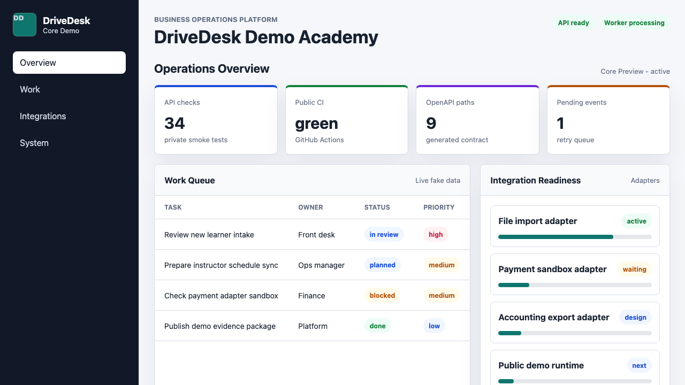

Runtime
FastAPI demo API, worker contract, Postgres-shaped repositories, Redis/outbox job model, and metrics endpoint.
Public Engineering Reference
Inspect the architecture, open the live operations demo, then verify the API contract, SDK artifacts, release gates, observability, GitOps, OpenTofu plan evidence, Adapter Studio, Control Tower, and incident response trail.

Use this page as the entrypoint, then follow the checked docs and commands when deeper proof is needed.
FastAPI demo API, worker contract, Postgres-shaped repositories, Redis/outbox job model, and metrics endpoint.
Tenants, RBAC, audit log, outbox recovery, business records, workflow rules, tasks, and documents.
Adapter catalog, Adapter Studio, scopes, mapping preview, operation contracts, diagnostics, reconciliation, and operator review.
Metrics, structured logs, alert routing, incident response, recovery drills, rollback, and SLO canary evidence.
Docker Compose, Helm, GitOps, OpenTofu plan evidence, CI gates, Pages health, and public/private export gate.
Follow the same path the release gate protects: system path, Business OS tour, architecture, demo, API contract, then operational evidence.
Start with the compact route that ties the public root, demo, API, SDK, operations evidence, GitOps, OpenTofu, and evidence index together.
Open system pathTrace business event -> workflow -> adapter -> incident -> proof across Control Tower, Adapter Studio, operations, and proof.
Open platform tourStart with the modular monolith, data boundary, adapter hub, and runtime shape.
Open system designUse the Overview, Workflow, Control Tower, Integrations, Operations, Incidents, and Proof tabs with synthetic data.
Open demoCheck the read-only demo endpoint, OpenAPI schema, and generated clients.
Open API notesFollow the gates for rollback, SLO canary, staged promotion, and drift handling.
Open evidenceThe public hub is static and safe to inspect, but it mirrors the same product boundaries used by the backend: tenant scope, audit, outbox, adapter operations, runtime checks, and release evidence.
Each link below maps to a checked public-safe artifact, not a loose note.
Compact engineering route through the public root, demo, API, SDK, operations evidence, release safety, GitOps, OpenTofu, and evidence index.
Open pathShows the reviewer how business event -> workflow -> adapter -> incident -> proof moves through Control Tower and Adapter Studio.
Open tourCurrent public-safe engineering state, validated surface, limits, and next work in one page.
Open statusMaps each backend, platform, integration, recovery, GitOps, and IaC capability to evidence and verifier commands.
Open mapMachine-readable map from capabilities to docs, evidence files, verifier commands, public URLs, and boundaries.
Open indexProvider-neutral path from profile and capability manifest to fixtures, runtime readiness, and release proof.
Open connector pathReplayable synthetic connector fixtures for happy path, redaction, invalid payload, retry, dead-letter, and reconciliation behavior.
Open replay pathPublic-safe metrics, structured logs, alert names, runbooks, and dashboard evidence.
Open observabilityAlertmanager-style routes, receivers, dedupe keys, escalation, silence contract, and runbook bindings.
Open alert routingRunbook-backed incident queue, owner assignment, mitigation actions, recovery timeline, and resolution evidence.
Open incidentsRead-only public demo API with generated Python, JavaScript, and TypeScript client artifacts.
Open API notesBackup/restore, rollback, SLO canary gate, staged promotion, and platform maturity evidence on synthetic data.
Open evidencePublic-safe 70 percent DevOps/platform milestone tied to verified runtime, delivery, operations, security, and recovery evidence.
Open maturity evidenceConnects the demo Proof tab, API payload, OpenAPI schema, SDK artifacts, docs, and CI checks.
Open proofStart with the quickstart, then run the public smoke path. The same commands are used by CI and the public release gate.
bash scripts/ci_smoke_public.sh
bash scripts/check_public_pages_entrypoint.sh
bash scripts/check_public_system_review_path.sh
bash scripts/check_public_platform_tour.sh
bash scripts/check_public_reviewer_quickstart.sh
bash scripts/check_public_project_status.sh
bash scripts/check_public_technical_capability_map.sh
bash scripts/check_public_evidence_index.sh
bash scripts/check_public_connector_certification.sh
bash scripts/check_public_observability_proof.sh
bash scripts/check_public_alert_routing.sh
bash scripts/check_public_review_guide.sh
bash scripts/check_public_engineering_proof.sh
bash scripts/check_public_demo_api.sh